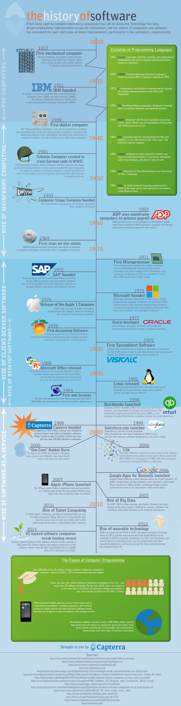
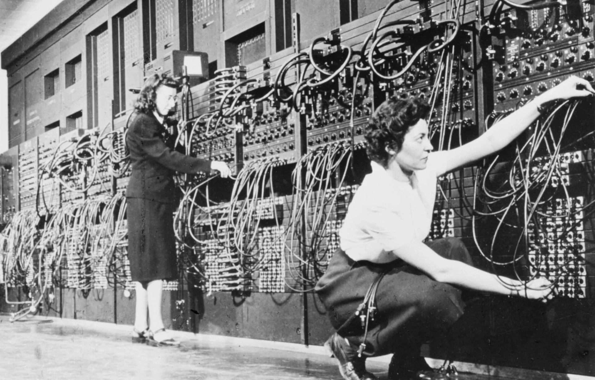
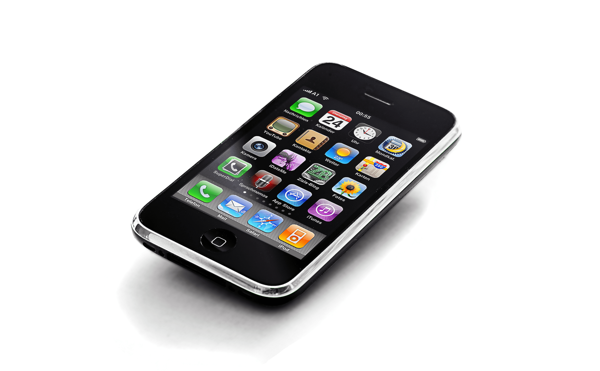
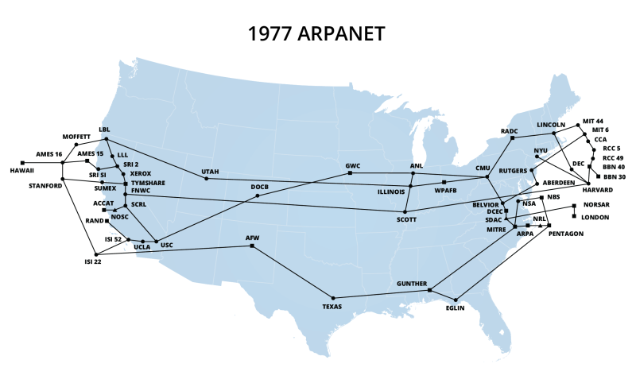
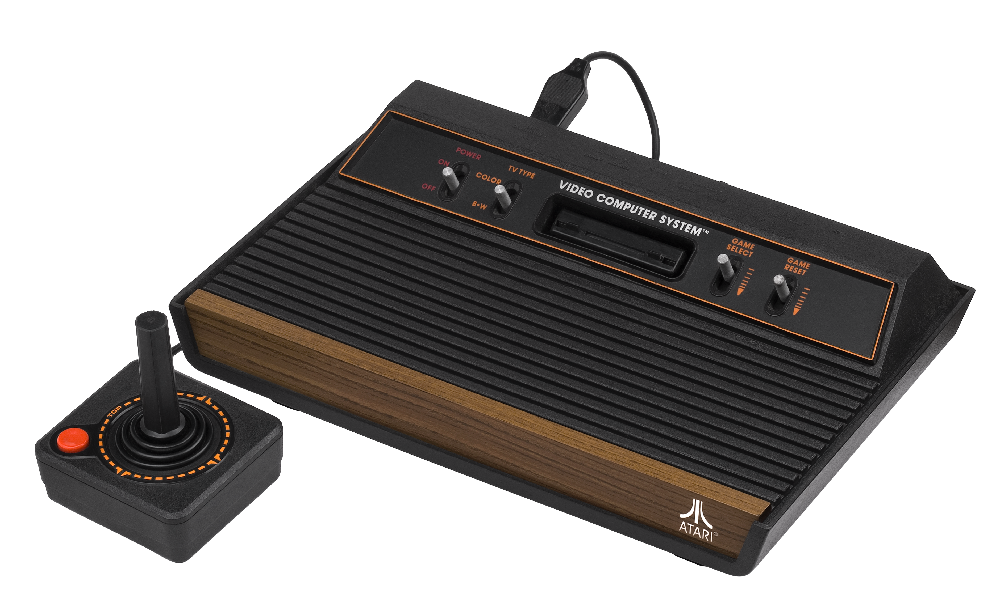

Timelines

How our Technology Evolved
Each of the timelines below covers roughly the same window of time from a different angle: the machines themselves, the network connecting them, and the devices that put them in your hands. Same decades, three different stories.

General Computing
| Year | Milestone | Why it mattered |
|---|---|---|
| 1945 | ENIAC completed | First general-purpose electronic digital computer; room-sized, ~18,000 vacuum tubes |
| 1947 | Transistor invented (Bell Labs) | Replaced fragile, power-hungry vacuum tubes; made smaller/reliable computers possible |
| 1958 | Integrated circuit invented | Put many transistors on a single chip; the foundation of modern electronics |
| 1971 | Intel 4004 released | First commercial microprocessor - a whole CPU on one chip |
| 1975 | Altair 8800 released | Kit computer that kicked off the personal computer hobbyist movement |
| 1981 | IBM PC released | Became the business/office standard and the ancestor of most modern PCs |
| 1984 | Apple Macintosh released | Brought the graphical user interface (windows, icons, mouse) to the mainstream |
| 2007 | Apple iPhone released | Merged the phone, computer, and Internet into one pocket-sized device |
| 2022 | ChatGPT launches | Brought generative AI to mainstream, everyday use almost overnight |
Notice the pace: it took about 30 years to go from a room-sized computer (1945) to a hobbyist kit you could build at home (1975), then only ~30 more years to go from that kit to a computer that fits in your pocket (2007). Each generation of computing has arrived faster than the one before it.

Internet


| Year | Milestone | Why it mattered |
|---|---|---|
| 1969 | ARPANET sends its first message | The first real computer-to-computer network - the Internet's direct ancestor |
| 1983 | ARPANET adopts TCP/IP | The common "language" that let separate networks join into one Internet |
| 1989-1991 | Tim Berners-Lee invents the World Wide Web | Gave the Internet pages, links, and browsers - the part most people actually see |
| 1993 | Mosaic browser released | First browser with inline images; made the web visual and approachable |
| 1995 | Amazon and eBay founded | E-commerce arrives; the "dot-com" boom begins |
| 2004 | Facebook launches | Social media era begins; the web shifts from reading to sharing |
| 2007 | Mobile internet takes off (iPhone) | The Internet becomes something you carry, not something you sit down for |
| 2020 | COVID-19 forces mass remote adoption | Video calls, remote work, and online learning become everyday defaults |
Personal Computers and Devices

| Year | Milestone | Why it mattered |
|---|---|---|
| 1975 | Altair 8800 | The first personal computer most hobbyists could actually own |
| 1977 | The "1977 Trinity" (Apple II, Commodore PET, TRS-80) | First ready-to-use PCs sold to regular consumers, not just hobbyists |
| 1977 | Atari 2600 released | First home video game console to reach mass-market adoption, with interchangeable cartridges |
| 1981 | IBM PC | Set the hardware/software standard offices would build around for decades |
| 1984 | Apple Macintosh | GUI computing goes mainstream |
| 1990s | Laptops become affordable and common | Computing untethers from the desk |
| 2001 | Apple iPod | Digital media replaces physical formats (CDs, tapes) |
| 2007 | Apple iPhone | The smartphone era begins |
| 2010 | Apple iPad | Tablets create a new category between phone and laptop |
| 2014+ | Smart speakers and wearables (Echo, smartwatches) | Computing moves off the screen and into ambient, always-listening devices |
Expected Tech Literacy Through the Digital Age
Technology doesn't just change - the baseline of what an "average" person is expected to know how to operate changes with it. Each generation grows up with a different set of assumed skills.
| Era | Expected tech literacy for an "average" American |
|---|---|
| 1950s-60s | Basic radio and television operation, rotary telephone usage, typewriters/adding machines, vinyl records |
| 1970s | Push-button telephones, basic calculators, early video game consoles (Atari), cassette tapes, early VCRs |
| 1980s | Programming a VCR (notoriously difficult for many), touch-tone phones, Walkmans, cable TV, home video game consoles |
| 1990s | Basic computer use, mouse/keyboard basics, early word processing, first mobile phones, CD players |
| 2000s | Email, web browsing, digital cameras, texting, DVD players |
| 2010s | Smartphones, texting fluency, social media basics, mobile apps, WiFi setup |
| 2020s | Smartphone fluency, social media across platforms, video calling, streaming services, mobile payments, password management, AI integration |
Notice how the 1980s bullet is the odd one out - "programming a VCR" became a running joke because it was one of the first times mainstream consumer technology asked people to configure something instead of just operate it. That's the same skill gap many people feel today with smart-home devices, streaming service settings, or two-factor authentication.
Paradigm Shifts
Terminology
Digital Immigrants = Born before widespread computing/Internet use. Had to learn and adapt to digital technologies later in life.
Digital Natives = Born after the 1990s. Never experienced a world without computers or the Internet.
Key Changes
-
Analog to Digital
- Transition from physical to digital storage and transmission
- Examples: vinyl to MP3, film to digital photos, paper to digital documents
-
Stationary to Mobile
- From fixed locations to anywhere access
- Desktop computers → laptops → smartphones
- Landline phones → mobile phones → smartphones
-
Local to Cloud
- Shift from local storage to cloud-based services
- Software installation to Software-as-a-Service (SaaS)
- Personal servers to cloud computing
-
Passive to Interactive Media
- One-way broadcast (TV/radio) to interactive content
- Rise of social media and user-generated content
- Gaming and interactive entertainment
-
Information Access
- Libraries and encyclopedias to instant internet searches
- Expert gatekeepers to crowd-sourced knowledge
- Traditional education to online learning
-
Privacy and Digital Citizenship
- Earlier generations grew up with relative anonymity by default - most everyday activity left no record anywhere
- Digital natives grow up leaving a digital footprint by default instead: purchases, searches, locations, and posts are recorded unless someone actively opts out
- What counts as "public" vs. "private" information has shifted generation to generation - a 1980s home address in a phone book felt private in a way a 2020s public social media profile does not, even though both are technically discoverable
- This shift is why being a good "digital citizen" - understanding what you share, who can see it, and what it's used for - has become a practical skill rather than an abstract concern
Keep this in mind for the assignment later in this course: most of the ethical and legal questions around modern technology use - data privacy, consent, online conduct - only exist because of this shift from "anonymous by default" to "recorded by default." It's a direct consequence of the timeline above, not a separate topic.